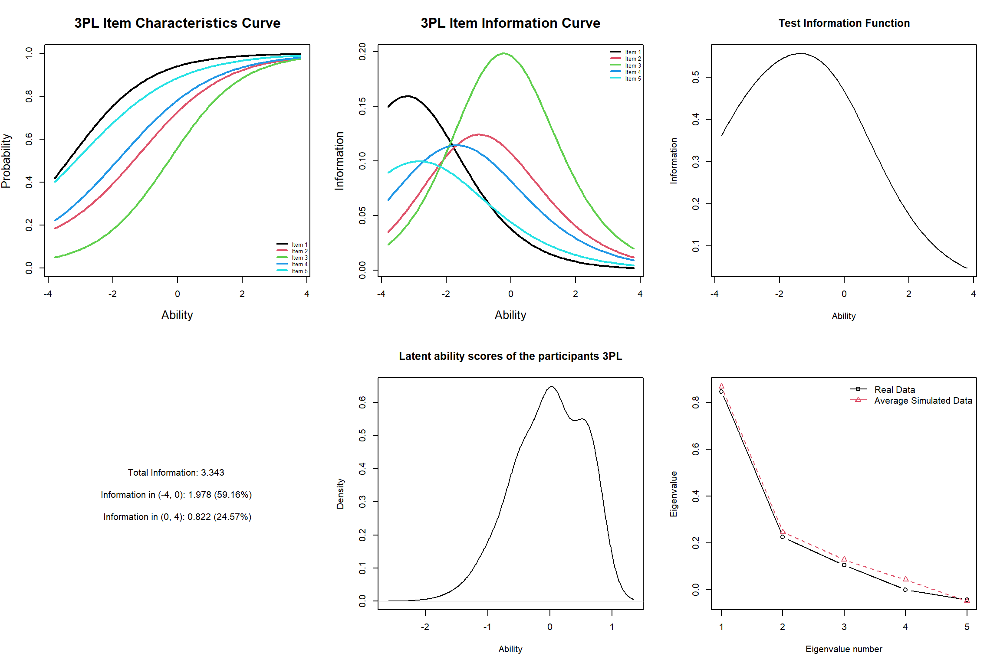

Introduction to Item Response Theory
My previous post on Classical Test Theory (CTT) discussed how it has several disadvantages that limit its interpretation to a certain group of population and therefore reduces its utility to test development. Specifically, generalizability of the test scores from CTT is quite limited due to item/test dependency; item parameters such as item difficulty, item discrimination, and reliability estimates are dependent upon test scores, which are derived from a group of sample (DeVellis, 2006). If we change our sample, those parameters might change. Also, If we administer two forms of the same test (i.e., form A and form B) to the same examinee, we still cannot guarantee that they will obtain the same score on both tests. Raw scores of a CTT-based test do not reflect learning progress of an examinee as CTT-based scores are not comparable across time (DeVellis, 2006).
Such limitations can be addressed by Item Response Theory (IRT). IRT is able to link information from test items to examinee performance on the same scale to provide information on the specific domain of interest and ability of the examinee () (Hambleton & Zenisky, 2018). The relationship between observable items and examinee performance is explained through Item Characteristic Curve (ICC), which explains the probability of getting an item(s) correctly given the current ability level and parameter (Hambleton & Jones, 1993). Therefore, IRT allows researchers to predict examinees expected test score given their ability level. In this post, I will be examining characteristics of test items based on the IRT framework. The R packages I will be using are
ltmandmirt.
- First, lets load in a data set. I will be using the data from Law
School Admission Test (LSAT), N = 1000, 5 items. The data can be called
with
data(LSAT).As an initial step, we can useltm::descriptfor descriptive statistics.
Descriptive statistics for the 'LSAT' data-set
Sample:
5 items and 1000 sample units; 0 missing values
Proportions for each level of response:
0 1 logit
Item 1 0.076 0.924 2.4980
Item 2 0.291 0.709 0.8905
Item 3 0.447 0.553 0.2128
Item 4 0.237 0.763 1.1692
Item 5 0.130 0.870 1.9010
Frequencies of total scores:
0 1 2 3 4 5
Freq 3 20 85 237 357 298
Point Biserial correlation with Total Score:
Included Excluded
Item 1 0.3620 0.1128
Item 2 0.5668 0.1532
Item 3 0.6184 0.1728
Item 4 0.5344 0.1444
Item 5 0.4354 0.1216
Cronbach's alpha:
value
All Items 0.2950
Excluding Item 1 0.2754
Excluding Item 2 0.2376
Excluding Item 3 0.2168
Excluding Item 4 0.2459
Excluding Item 5 0.2663
Pairwise Associations:
Item i Item j p.value
1 1 5 0.565
2 1 4 0.208
3 3 5 0.113
4 2 4 0.059
5 1 2 0.028
6 2 5 0.009
7 1 3 0.003
8 4 5 0.002
9 3 4 7e-04
10 2 3 4e-04- From the output above, inspection of non significant results can be used to reveal problematic items in pairwise association. Latent variable models assume that the high associations between items can be explained by a set of latent variables, so any pair of items that is not related to each other violates this assumption. Additionally, Item 1 seems to be the easiest item as seen from its highest proportion of correct response.
Dichotomous Item
- We will be performing IRT analyses on dichotomous items, which are items that only have two possible scores of incorrect (0) and correct (1). The three most common dichotomous IRT models are Rasch/1-parameter logistics model (1PL), 2-parameter logistics model (2PL), and 3-parameter logistics model(3PL).
Rasch Model (1PL)
We will fit the original Rasch model, which fixes the item discrimination (aka a parameter) of all items to 1 to the data. The 1PL (also called Rasch model) model describes test items in terms of only one parameter, item difficulty (aka b parameter). Item difficulty is simply how hard an item is (how high does ones latent ability level need to be in order to have a 50% chance of getting the item right?). b-parameter is estimated for each item of the test.
The
ltm::rasch()assumes equal a-parameter across items with an estimated value. In order to impose the constraint = 1, theconstraintargument is used. This argument accepts a two-column matrix where the first column denotes the parameter and the second column indicates the value at which the corresponding parameter should be fixed.
Call:
rasch(data = LSAT, constraint = cbind(length(LSAT) + 1, 1))
Model Summary:
log.Lik AIC BIC
-2473.054 4956.108 4980.646
Coefficients:
value std.err z.vals
Dffclt.Item 1 -2.8720 0.1287 -22.3066
Dffclt.Item 2 -1.0630 0.0821 -12.9458
Dffclt.Item 3 -0.2576 0.0766 -3.3635
Dffclt.Item 4 -1.3881 0.0865 -16.0478
Dffclt.Item 5 -2.2188 0.1048 -21.1660
Dscrmn 1.0000 NA NA
Integration:
method: Gauss-Hermite
quadrature points: 21
Optimization:
Convergence: 0
max(|grad|): 6.3e-05
quasi-Newton: BFGS - The results of the descriptive analysis are also validated by the
model fit, where items 3 and 1 are the most difficult and the easiest
respectively (the lower the b-parameter value, the easier). The
parameter estimates can be transformed to probability estimates using
the
coef()method
Show code
coef(mod_rasch, prob = TRUE, order = TRUE)
Dffclt Dscrmn P(x=1|z=0)
Item 1 -2.8719712 1 0.9464434
Item 5 -2.2187785 1 0.9019232
Item 4 -1.3880588 1 0.8002822
Item 2 -1.0630294 1 0.7432690
Item 3 -0.2576109 1 0.5640489- The last column denotes the probability of a positive response
(getting the item correctly) to the ith item for the average
individual. The argument
order = TRUEindicates the output to sort the items according to the difficulty estimates. In order to check the fit of the model to the data, the argumentGoF.rasch()andmargins()can be used. The former argument performs a parametric Bootstrap goodness-of-fit test using Pearsons Chi-square statistics, while the latter examines the two- and three-way chi-square residual analysis.
Show code
GoF.rasch(mod_rasch, B = 199) # B = Bootstrap sample
Bootstrap Goodness-of-Fit using Pearson chi-squared
Call:
rasch(data = LSAT, constraint = cbind(length(LSAT) + 1, 1))
Tobs: 30.6
# data-sets: 200
p-value: 0.225 - Based on 200 data-points, the non significant p-value suggests an acceptable fit of the model. The null hypothesis states that the observed data and the model fit with each other (no differences). Now, for two-way margin analysis.
Show code
margins(mod_rasch)
Call:
rasch(data = LSAT, constraint = cbind(length(LSAT) + 1, 1))
Fit on the Two-Way Margins
Response: (0,0)
Item i Item j Obs Exp (O-E)^2/E
1 2 4 81 98.69 3.17
2 1 5 12 18.45 2.25
3 3 5 67 80.04 2.12
Response: (1,0)
Item i Item j Obs Exp (O-E)^2/E
1 3 5 63 51.62 2.51
2 2 4 156 139.78 1.88
3 3 4 108 99.42 0.74
Response: (0,1)
Item i Item j Obs Exp (O-E)^2/E
1 2 4 210 193.47 1.41
2 2 3 135 125.07 0.79
3 1 4 53 47.24 0.70
Response: (1,1)
Item i Item j Obs Exp (O-E)^2/E
1 2 4 553 568.06 0.40
2 3 5 490 501.43 0.26
3 2 3 418 427.98 0.23 - From the above output, using the 3.5 rule of thumb, the value of all two-way combinations are below the cut-off (same way of how statistical hypothesis works) and therefore indicate a good fit to the two-way margins. Next, we will examine the fit to the three-way margins.
Show code
margins(mod_rasch, type = "three-way", nprint = 2) #nprint returns 2 highest residual values for each combinations
Call:
rasch(data = LSAT, constraint = cbind(length(LSAT) + 1, 1))
Fit on the Three-Way Margins
Response: (0,0,0)
Item i Item j Item k Obs Exp (O-E)^2/E
1 2 3 4 48 66.07 4.94 ***
2 1 3 5 6 13.58 4.23 ***
Response: (1,0,0)
Item i Item j Item k Obs Exp (O-E)^2/E
1 1 2 4 70 82.01 1.76
2 2 4 5 28 22.75 1.21
Response: (0,1,0)
Item i Item j Item k Obs Exp (O-E)^2/E
1 1 2 5 3 7.73 2.90
2 3 4 5 37 45.58 1.61
Response: (1,1,0)
Item i Item j Item k Obs Exp (O-E)^2/E
1 3 4 5 48 36.91 3.33
2 1 2 4 144 126.35 2.47
Response: (0,0,1)
Item i Item j Item k Obs Exp (O-E)^2/E
1 1 3 5 41 34.58 1.19
2 2 4 5 64 72.26 0.94
Response: (1,0,1)
Item i Item j Item k Obs Exp (O-E)^2/E
1 1 2 4 190 174.87 1.31
2 1 2 3 126 114.66 1.12
Response: (0,1,1)
Item i Item j Item k Obs Exp (O-E)^2/E
1 1 2 5 42 34.35 1.70
2 1 4 5 46 38.23 1.58
Response: (1,1,1)
Item i Item j Item k Obs Exp (O-E)^2/E
1 3 4 5 397 416.73 0.93
2 2 3 4 343 361.18 0.91
'***' denotes a chi-squared residual greater than 3.5 - The three-way margins suggest a problematic fit for two triplets of
items, both containing item 3. We can try fitting the unconstrained
version of Rasch model (not fixing the a-parameter to 1) to see
the difference. This time, no need for the
constraintargument.
Show code
mod_1pl <- rasch(LSAT, constraint = NULL)
- After fitting the 1PL model, we will request for Item Characteristics Curve (ICC), Item Information Curve (IIC), Test Information Function (TIF), Latent Ability Curve of the examinees, and Uni-dimensionality Plot of the model.
Show code
par(mfrow = c(2, 3))
plot(mod_1pl, type=c("ICC"),
legend = TRUE, cx = "bottomright", lwd = 2,
cex.main = 1.5, cex.lab = 1.3, cex = 0.6, main = "1PL Item Characteristics Curve")
plot(mod_1pl,type=c("IIC"),
legend = TRUE, cx = "topright", lwd = 2,
cex.main = 1.5, cex.lab = 1.3, cex = 0.6, main = "1PL Item Information Curve")
plot(mod_1pl,type=c("IIC"),items=c(0), lwd = 2,
cex.main = 1.5, cex.lab = 1.3, cex = 0.6, main = "Test Information Function")
plot(0:1, 0:1, type = "n", ann = FALSE, axes = FALSE)
info1 <- information(mod_1pl, c(-4, 0)) #Item information on the negative area of theta (-4 to 0)
info2 <- information(mod_1pl, c(0, 4)) #Item information on the positive area of theta (0 to 4)
text(0.5, 0.5, labels = paste("Total Information:", round(info1$InfoTotal, 3),
"\n\nInformation in (-4, 0):", round(info1$InfoRange, 3),
paste("(", round(100 * info1$PropRange, 2), "%)", sep = ""),
"\n\nInformation in (0, 4):", round(info2$InfoRange, 3),
paste("(", round(100 * info2$PropRange, 2), "%)", sep = "")))
theta.rasch<-ltm::factor.scores(mod_1pl)
summary(theta.rasch$score.dat$z1)
Min. 1st Qu. Median Mean 3rd Qu. Max.
-1.9104 -0.9594 -0.4660 -0.6867 -0.4660 0.5930 Show code
plot(theta.rasch, main = "Latent Ability of the Examinee")
unitest_1pl <- unidimTest(mod_1pl,LSAT)
plot(unitest_1pl, type = "b", pch = 1:2, main = "Modified Parallel Analysis Plot")
legend("topright", c("Real Data", "Average Simulated Data"), lty = 1,
pch = 1:2, col = 1:2, bty = "n")
The first plot is ICC of out 1PL model. ICC shows the relationship between examinee ability () and the probability of examinees answering an item correctly based on their ability. On ICC, item discrimination is represented by the steepness of the curve, and item difficulty is represented by the position where the probability of getting the item correct is 0.5.
Try comparing item 1 and item 3. For item 1, the point where the probability of getting the item correctly is 0.5 matches with the ability point -4 on the X-axis. However, for item 3, the point where the probability of getting the item correctly is 0.5 matches with the ability point 0 on the X-axis. In other words, you need more ability to get item 3 correct than item 1.
The second plot is IIC. IIC shows how much information about the latent trait ability an item can provide. Item information curves peak at the point of difficulty value, where the item has the highest discrimination and the probability of answering the item correctly is 0.5. To put it in plain language, a very difficult item will provide very little information about persons with low ability (because the item is already too hard), and very easy items will provide little information about persons with high ability levels (because it is too easy).
The third plot is TIF of the whole test. This is simply the sum of the individual IICs above. The curves shows how much information this test offers in terms of ability level of examinees. Ideally, we want a test which provides fairly good coverage of a wide range of latent ability levels. Otherwise, the test is only good at identifying a limited range of examinees. The current TIF shows that more information is yielded around examinees with -2 ability level. The test could use more items for people with high ability (more difficult item is needed). In particular, the amount of Test Information for ability levels in the interval (-4 - 0) is almost 60%, and the item that seems to distinguish between respondents with higher ability levels is item 3 as it is the most difficult item.
The Latent Ability Curve shows the distribution of examinees latent ability level. The plot shows that most examinees are located around 0 to 1 ability level.
Show code
unitest_1pl
Unidimensionality Check using Modified Parallel Analysis
Call:
rasch(data = LSAT, constraint = NULL)
Matrix of tertachoric correlations
Item 1 Item 2 Item 3 Item 4 Item 5
Item 1 1.0000 0.1703 0.2275 0.1072 0.0665
Item 2 0.1703 1.0000 0.1891 0.1111 0.1724
Item 3 0.2275 0.1891 1.0000 0.1867 0.1055
Item 4 0.1072 0.1111 0.1867 1.0000 0.2009
Item 5 0.0665 0.1724 0.1055 0.2009 1.0000
Alternative hypothesis: the second eigenvalue of the observed data is substantially larger
than the second eigenvalue of data under the assumed IRT model
Second eigenvalue in the observed data: 0.2254
Average of second eigenvalues in Monte Carlo samples: 0.252
Monte Carlo samples: 100
p-value: 0.6139- The last plot is a test for unidimensionality of the test with modified parallel analysis (Drasgpw & Lissak, 1983). The output above shows that the result is non-significant, meaning that the 1PL model fits the data well and we are actually measuring a single trait here. The data is a law school test, so it should be measuring contents about law, not maths or English. The unidimensionality analysis shows that the test is measuring what it is intended to measure.
Show code
summary(mod_1pl)
Call:
rasch(data = LSAT, constraint = NULL)
Model Summary:
log.Lik AIC BIC
-2466.938 4945.875 4975.322
Coefficients:
value std.err z.vals
Dffclt.Item 1 -3.6153 0.3266 -11.0680
Dffclt.Item 2 -1.3224 0.1422 -9.3009
Dffclt.Item 3 -0.3176 0.0977 -3.2518
Dffclt.Item 4 -1.7301 0.1691 -10.2290
Dffclt.Item 5 -2.7802 0.2510 -11.0743
Dscrmn 0.7551 0.0694 10.8757
Integration:
method: Gauss-Hermite
quadrature points: 21
Optimization:
Convergence: 0
max(|grad|): 2.9e-05
quasi-Newton: BFGS Show code
coef(mod_1pl, prob = TRUE, order = TRUE)
Dffclt Dscrmn P(x=1|z=0)
Item 1 -3.6152665 0.7551347 0.9387746
Item 5 -2.7801716 0.7551347 0.8908453
Item 4 -1.7300903 0.7551347 0.7869187
Item 2 -1.3224208 0.7551347 0.7307844
Item 3 -0.3176306 0.7551347 0.5596777- The output above suggests that the discrimination parameter of our
unconstrained model is different from 1, meaning that our constrained
and unconstrained Rasch models are different. The difference can be
tested with a likelihood ratio test using
anova()..
Show code
anova(mod_rasch, mod_1pl)
Likelihood Ratio Table
AIC BIC log.Lik LRT df p.value
mod_rasch 4956.11 4980.65 -2473.05
mod_1pl 4945.88 4975.32 -2466.94 12.23 1 <0.001By comparing model summary of the constrained and unconstrained version, the latter is more suitable for the LSAT data due to its smaller Akaikes Information Criterion (AIC) and Bayesian Information Criterion (BIC) values. AIC and BIC are measures of model performance that account for model complexity. AIC is a measure that determines which model fits the data better. The lower the score, the better fit the model is. Similarly for BIC, the score measures complexity of the model. BIC penalizes the model more for its complexity, meaning that more complex models will have a worse (larger) score and will, in turn, be less likely to be selected.
We can double check the result by testing the unconstrained model with the three-way margins, which yields a problematic fit with the constrained model.
Show code
margins(mod_1pl, type = "three-way", nprint = 2)
Call:
rasch(data = LSAT, constraint = NULL)
Fit on the Three-Way Margins
Response: (0,0,0)
Item i Item j Item k Obs Exp (O-E)^2/E
1 1 3 5 6 9.40 1.23
2 3 4 5 30 25.85 0.67
Response: (1,0,0)
Item i Item j Item k Obs Exp (O-E)^2/E
1 2 4 5 28 22.75 1.21
2 2 3 4 81 74.44 0.58
Response: (0,1,0)
Item i Item j Item k Obs Exp (O-E)^2/E
1 1 2 5 3 7.58 2.76
2 1 3 4 5 9.21 1.92
Response: (1,1,0)
Item i Item j Item k Obs Exp (O-E)^2/E
1 2 4 5 51 57.49 0.73
2 3 4 5 48 42.75 0.64
Response: (0,0,1)
Item i Item j Item k Obs Exp (O-E)^2/E
1 1 3 5 41 33.07 1.90
2 2 3 4 108 101.28 0.45
Response: (1,0,1)
Item i Item j Item k Obs Exp (O-E)^2/E
1 2 3 4 210 218.91 0.36
2 1 2 4 190 185.56 0.11
Response: (0,1,1)
Item i Item j Item k Obs Exp (O-E)^2/E
1 1 3 5 23 28.38 1.02
2 1 4 5 46 42.51 0.29
Response: (1,1,1)
Item i Item j Item k Obs Exp (O-E)^2/E
1 1 2 4 520 526.36 0.08
2 1 2 3 398 393.30 0.06 - The new three-way margins suggests a good fit with the unconstrained Rasch model. Finally, we investigate two more possible extensions of the unconstrained Rasch model, the two-parameter logistic (2PL) model that assumes a different discrimination parameter per item, and Rasch model that incorporates a guessing parameter (3PL).
2 Parameter Logistics Model (2PL)
The 2PL model has the same equation as the 1PL model, but unlike 1PL, 2PL allows item discrimination and item difficulty to vary across items instead of fixing it to a constant value.
The 2PL model can also be fitted with
ltm().The formula ofltm()is two-sided, where its left is either a data frame or a matrix, and its right allows onlyz1and/orz2. Latent variables withz2serves in the case of interaction.
Call:
ltm(formula = LSAT ~ z1)
Model Summary:
log.Lik AIC BIC
-2466.653 4953.307 5002.384
Coefficients:
value std.err z.vals
Dffclt.Item 1 -3.3597 0.8669 -3.8754
Dffclt.Item 2 -1.3696 0.3073 -4.4565
Dffclt.Item 3 -0.2799 0.0997 -2.8083
Dffclt.Item 4 -1.8659 0.4341 -4.2982
Dffclt.Item 5 -3.1236 0.8700 -3.5904
Dscrmn.Item 1 0.8254 0.2581 3.1983
Dscrmn.Item 2 0.7229 0.1867 3.8721
Dscrmn.Item 3 0.8905 0.2326 3.8281
Dscrmn.Item 4 0.6886 0.1852 3.7186
Dscrmn.Item 5 0.6575 0.2100 3.1306
Integration:
method: Gauss-Hermite
quadrature points: 21
Optimization:
Convergence: 0
max(|grad|): 0.024
quasi-Newton: BFGS - The output above shows that the model estimated both item difficulty and item discrimination. Next, we can try comparing our 1PL model with the newly fitted 2PL model.
Show code
#compare
anova(mod_1pl, mod_2pl)
Likelihood Ratio Table
AIC BIC log.Lik LRT df p.value
mod_1pl 4945.88 4975.32 -2466.94
mod_2pl 4953.31 5002.38 -2466.65 0.57 4 0.967- The comparison suggested no significant difference between both models. Next, we ca nrequest for ICC, IIC, TIF, Latent Ability Distribution, and Unidimensionality Plot like we did with the 1PL model.
Show code
par(mfrow = c(2, 3))
plot(mod_2pl, type=c("ICC"),
legend = TRUE, cx = "bottomright", lwd = 2,
cex.main = 1.5, cex.lab = 1.3, cex = 0.6, main = "2PL Item Characteristics Curve")
plot(mod_2pl,type=c("IIC"),
legend = TRUE, cx = "topright", lwd = 2,
cex.main = 1.5, cex.lab = 1.3, cex = 0.6, main = "2PL Item Information Curve")
plot(mod_2pl,type=c("IIC"),items=c(0), lwd = 2,
cex.main = 1.5, cex.lab = 1.3, cex = 0.6, main = "Test Information Function")
plot(0:1, 0:1, type = "n", ann = FALSE, axes = FALSE)
info1_2pl <- information(mod_2pl, c(-4, 0)) #Item information on the negative area of theta (-4 to 0)
info2_2pl <- information(mod_2pl, c(0, 4)) #Item information on the positive area of theta (0 to 4)
text(0.5, 0.5, labels = paste("Total Information:", round(info1_2pl$InfoTotal, 3),
"\n\nInformation in (-4, 0):", round(info1_2pl$InfoRange, 3),
paste("(", round(100 * info1_2pl$PropRange, 2), "%)", sep = ""),
"\n\nInformation in (0, 4):", round(info2_2pl$InfoRange, 3),
paste("(", round(100 * info2_2pl$PropRange, 2), "%)", sep = "")))
theta.2pl<-ltm::factor.scores(mod_2pl)
summary(theta.2pl$score.dat$z1)
Min. 1st Qu. Median Mean 3rd Qu. Max.
-1.8953 -1.0026 -0.5397 -0.6629 -0.3572 0.6064 Show code
plot(theta.2pl, main = "Latent ability scores of the participants 2PL")
unitest_2pl <- unidimTest(mod_2pl,LSAT)
plot(unitest_2pl, type = "b", pch = 1:2)
legend("topright", c("Real Data", "Average Simulated Data"), lty = 1,
pch = 1:2, col = 1:2, bty = "n")

- ICC and IIC of the two models are different, meaning that when we allow item discrimination to vary, characteristics and yielded information of each item also changed accordingly.
Show code
unitest_2pl
Unidimensionality Check using Modified Parallel Analysis
Call:
ltm(formula = LSAT ~ z1)
Matrix of tertachoric correlations
Item 1 Item 2 Item 3 Item 4 Item 5
Item 1 1.0000 0.1703 0.2275 0.1072 0.0665
Item 2 0.1703 1.0000 0.1891 0.1111 0.1724
Item 3 0.2275 0.1891 1.0000 0.1867 0.1055
Item 4 0.1072 0.1111 0.1867 1.0000 0.2009
Item 5 0.0665 0.1724 0.1055 0.2009 1.0000
Alternative hypothesis: the second eigenvalue of the observed data is substantially larger
than the second eigenvalue of data under the assumed IRT model
Second eigenvalue in the observed data: 0.2254
Average of second eigenvalues in Monte Carlo samples: 0.2576
Monte Carlo samples: 100
p-value: 0.6337- The above results of unidimensionality testing also suggests that the test measures only one construct. When considering two models together, it might be more preferable for us to choose the 1PL model as there is no difference between both 1PL and 2PL; however, by nature, 1PL model is more simple and easier to explain comparing to 2PL. Let us try fitting the data to a 3PL model just in case.
3 Parameter Logistics Model (3PL)
- The 3PL model is very similar to the 2PL model; however, the model
includes an additional parameter: lower asymptote (also known as the
guessing parameter). Under this model, individuals with zero ability
have a nonzero chance of correctly answering any item just by guessing
randomly. A 3PL model can be fitted with
tpm()
Call:
tpm(data = LSAT, type = "latent.trait", max.guessing = 1)
Model Summary:
log.Lik AIC BIC
-2466.66 4963.319 5036.935
Coefficients:
value std.err z.vals
Gussng.Item 1 0.0374 0.8650 0.0432
Gussng.Item 2 0.0777 2.5282 0.0307
Gussng.Item 3 0.0118 0.2815 0.0419
Gussng.Item 4 0.0353 0.5769 0.0612
Gussng.Item 5 0.0532 1.5596 0.0341
Dffclt.Item 1 -3.2965 1.7788 -1.8532
Dffclt.Item 2 -1.1451 7.5166 -0.1523
Dffclt.Item 3 -0.2490 0.7527 -0.3308
Dffclt.Item 4 -1.7658 1.6162 -1.0925
Dffclt.Item 5 -2.9902 4.0606 -0.7364
Dscrmn.Item 1 0.8286 0.2877 2.8797
Dscrmn.Item 2 0.7604 1.3774 0.5520
Dscrmn.Item 3 0.9016 0.4190 2.1516
Dscrmn.Item 4 0.7007 0.2574 2.7219
Dscrmn.Item 5 0.6658 0.3282 2.0284
Integration:
method: Gauss-Hermite
quadrature points: 21
Optimization:
Optimizer: optim (BFGS)
Convergence: 0
max(|grad|): 0.028 - The model summary above suggested that all three item parameters of item discrimination (a), item difficulty (b), and item guessing (c) are allowed to vary. Like what we did, we can try requesting for ICC, IIC, TIF, latent ability distribution, and unidimensionality plot.
Show code
par(mfrow = c(2, 3))
plot(mod_3pl, type=c("ICC"),
legend = TRUE, cx = "bottomright", lwd = 2,
cex.main = 1.5, cex.lab = 1.3, cex = 0.6, main = "3PL Item Characteristics Curve")
plot(mod_3pl,type=c("IIC"),
legend = TRUE, cx = "topright", lwd = 2,
cex.main = 1.5, cex.lab = 1.3, cex = 0.6, main = "3PL Item Information Curve")
plot(mod_3pl,type=c("IIC"),items=c(0))
plot(0:1, 0:1, type = "n", ann = FALSE, axes = FALSE)
info1_3pl <- information(mod_3pl, c(-4, 0)) #Item information on the negative area of theta (-4 to 0)
info2_3pl <- information(mod_3pl, c(0, 4)) #Item information on the positive area of theta (0 to 4)
text(0.5, 0.5, labels = paste("Total Information:", round(info1_3pl$InfoTotal, 3),
"\n\nInformation in (-4, 0):", round(info1_3pl$InfoRange, 3),
paste("(", round(100 * info1_3pl$PropRange, 2), "%)", sep = ""),
"\n\nInformation in (0, 4):", round(info2_3pl$InfoRange, 3),
paste("(", round(100 * info2_3pl$PropRange, 2), "%)", sep = "")))
theta.3pl<-ltm::factor.scores(mod_3pl)
summary(theta.3pl$score.dat$z1)
Min. 1st Qu. Median Mean 3rd Qu. Max.
-1.8706 -0.9992 -0.5368 -0.6584 -0.3590 0.6116 Show code
plot(theta.3pl, main = "Latent ability scores of the participants 3PL")
unitest_3pl <- unidimTest(mod_3pl,LSAT)
plot(unitest_3pl, type = "b", pch = 1:2)
legend("topright", c("Real Data", "Average Simulated Data"), lty = 1,
pch = 1:2, col = 1:2, bty = "n")

Show code
unitest_3pl
Unidimensionality Check using Modified Parallel Analysis
Call:
tpm(data = LSAT, type = "latent.trait", max.guessing = 1)
Matrix of tertachoric correlations
Item 1 Item 2 Item 3 Item 4 Item 5
Item 1 1.0000 0.1703 0.2275 0.1072 0.0665
Item 2 0.1703 1.0000 0.1891 0.1111 0.1724
Item 3 0.2275 0.1891 1.0000 0.1867 0.1055
Item 4 0.1072 0.1111 0.1867 1.0000 0.2009
Item 5 0.0665 0.1724 0.1055 0.2009 1.0000
Alternative hypothesis: the second eigenvalue of the observed data is substantially larger
than the second eigenvalue of data under the assumed IRT model
Second eigenvalue in the observed data: 0.2254
Average of second eigenvalues in Monte Carlo samples: 0.2465
Monte Carlo samples: 100
p-value: 0.5743- The unidimensionality testing above suggested non-significant result, meaning that the test measures one construct as intended.
Show code
anova(mod_1pl, mod_3pl)
Likelihood Ratio Table
AIC BIC log.Lik LRT df p.value
mod_1pl 4945.88 4975.32 -2466.94
mod_3pl 4963.32 5036.94 -2466.66 0.56 9 1- The comparison between the 1PL and the 3PL model also suggests no
statistical differences. The 3PL model also has larger AIC and BIC;
therefore, it is more preferable for us to use 1PL model with this data.
Finally, we can request for ability estimates for all response pattern
with the
factor.scores()function.
Show code
factor.scores(mod_1pl)
Call:
rasch(data = LSAT, constraint = NULL)
Scoring Method: Empirical Bayes
Factor-Scores for observed response patterns:
Item 1 Item 2 Item 3 Item 4 Item 5 Obs Exp z1 se.z1
1 0 0 0 0 0 3 2.364 -1.910 0.790
2 0 0 0 0 1 6 5.468 -1.439 0.793
3 0 0 0 1 0 2 2.474 -1.439 0.793
4 0 0 0 1 1 11 8.249 -0.959 0.801
5 0 0 1 0 0 1 0.852 -1.439 0.793
6 0 0 1 0 1 1 2.839 -0.959 0.801
7 0 0 1 1 0 3 1.285 -0.959 0.801
8 0 0 1 1 1 4 6.222 -0.466 0.816
9 0 1 0 0 0 1 1.819 -1.439 0.793
10 0 1 0 0 1 8 6.063 -0.959 0.801
11 0 1 0 1 1 16 13.288 -0.466 0.816
12 0 1 1 0 1 3 4.574 -0.466 0.816
13 0 1 1 1 0 2 2.070 -0.466 0.816
14 0 1 1 1 1 15 14.749 0.049 0.836
15 1 0 0 0 0 10 10.273 -1.439 0.793
16 1 0 0 0 1 29 34.249 -0.959 0.801
17 1 0 0 1 0 14 15.498 -0.959 0.801
18 1 0 0 1 1 81 75.060 -0.466 0.816
19 1 0 1 0 0 3 5.334 -0.959 0.801
20 1 0 1 0 1 28 25.834 -0.466 0.816
21 1 0 1 1 0 15 11.690 -0.466 0.816
22 1 0 1 1 1 80 83.310 0.049 0.836
23 1 1 0 0 0 16 11.391 -0.959 0.801
24 1 1 0 0 1 56 55.171 -0.466 0.816
25 1 1 0 1 0 21 24.965 -0.466 0.816
26 1 1 0 1 1 173 177.918 0.049 0.836
27 1 1 1 0 0 11 8.592 -0.466 0.816
28 1 1 1 0 1 61 61.235 0.049 0.836
29 1 1 1 1 0 28 27.709 0.049 0.836
30 1 1 1 1 1 298 295.767 0.593 0.862- By default,
factor.scores()produces ability estimates for the observed response patterns (every combination available); if ability estimates are required for non observed or specific response patterns, these could be specified using theresp.patternsargument.
Show code
factor.scores(mod_1pl, resp.patterns = rbind(c(1,1,1,1,1), c(0,0,0,0,0)))
Call:
rasch(data = LSAT, constraint = NULL)
Scoring Method: Empirical Bayes
Factor-Scores for specified response patterns:
Item 1 Item 2 Item 3 Item 4 Item 5 Obs Exp z1 se.z1
1 1 1 1 1 1 298 295.767 0.593 0.862
2 0 0 0 0 0 3 2.364 -1.910 0.790The specified response patterns above are for examinees who got all items correctly and incorrectly respectively. The results suggested that the examinee who got all item correctly has ability level of 0.50 and the examinee who got all item incorrectly has ability level of -1.91.
The model we discussed so far, Rasch, 1PL,2PL, 3PL are all suitable for dichotomous test items (True/False), but what if item responses have more than 2 categories like in a survey (i.e., 1 = Strongly disagree 2 = Disagree 3 = Agree 4 = Strongly Agree)? This is when we use polytomous IRT models.
Polytomous Item
- The data we consider here comes from the Environment section of the
1990 British Social Attitudes Survey, N = 291, 6 items, 3 ordinal
response options. The data can be loaded with
data(Environment).
Descriptive statistics for the 'Environment' data-set
Sample:
6 items and 291 sample units; 0 missing values
Proportions for each level of response:
very concerned slightly concerned not very concerned
LeadPetrol 0.6151 0.3265 0.0584
RiverSea 0.8007 0.1753 0.0241
RadioWaste 0.7457 0.1924 0.0619
AirPollution 0.6495 0.3196 0.0309
Chemicals 0.7491 0.1924 0.0584
Nuclear 0.5155 0.3265 0.1581
Frequencies of total scores:
6 7 8 9 10 11 12 13 14 15 16 17 18
Freq 96 51 37 27 26 18 13 7 6 6 1 1 2
Cronbach's alpha:
value
All Items 0.8215
Excluding LeadPetrol 0.8218
Excluding RiverSea 0.7990
Excluding RadioWaste 0.7767
Excluding AirPollution 0.7751
Excluding Chemicals 0.7790
Excluding Nuclear 0.8058
Pairwise Associations:
Item i Item j p.value
1 1 2 0.001
2 1 3 0.001
3 1 4 0.001
4 1 5 0.001
5 1 6 0.001
6 2 3 0.001
7 2 4 0.001
8 2 5 0.001
9 2 6 0.001
10 3 4 0.001- From the descriptive output, the first response, very
concerned, has the highest frequency. The p-values for the
pairwise associations indicate significant associations between all
items. An alternative method to explore the degree of association
between pairs of items can be done with
rcor.test()for non-parametric correlation coefficients.
Show code
rcor.test(Environment, method = "kendall")
LeadPetrol RiverSea RadioWaste AirPollution Chemicals
LeadPetrol ***** 0.385 0.260 0.457 0.305
RiverSea <0.001 ***** 0.399 0.548 0.403
RadioWaste <0.001 <0.001 ***** 0.506 0.623
AirPollution <0.001 <0.001 <0.001 ***** 0.504
Chemicals <0.001 <0.001 <0.001 <0.001 *****
Nuclear <0.001 <0.001 <0.001 <0.001 <0.001
Nuclear
LeadPetrol 0.279
RiverSea 0.320
RadioWaste 0.484
AirPollution 0.382
Chemicals 0.463
Nuclear *****
upper diagonal part contains correlation coefficient estimates
lower diagonal part contains corresponding p-values- The
rcor.test()provides two options for nonparametric calculation, Kendalls Tau and Spearmans rho inmethodargument. Initially, we will fit the partial credit model (PCM), which is a Polytomous version of the Rasch model.
Partial Credit Model
PCM fixes the discrimination parameter of all item as 1 in the same way as what Raschs model does. The threshold (or the parameter that represents the trait level necessary for an examinee to have 50% to pick a response category) of PCM is allowed to vary.
For the
gpcm()function, Ifconstraint = "rasch", then the discrimination parameter is assumed equal for all items and fixed at one. Ifconstraint = "1PL", then the discrimination parameter i is assumed equal for all items but is estimated. Here, we are fixing all discrimination parameter to 1.
Call:
gpcm(data = Environment, constraint = "rasch")
Model Summary:
log.Lik AIC BIC
-1147.176 2318.351 2362.431
Coefficients:
$LeadPetrol
value std.err z.value
Catgr.1 0.680 0.153 4.450
Catgr.2 2.785 0.292 9.541
Dscrmn 1.000 NA NA
$RiverSea
value std.err z.value
Catgr.1 1.822 0.180 10.149
Catgr.2 3.385 0.435 7.781
Dscrmn 1.000 NA NA
$RadioWaste
value std.err z.value
Catgr.1 1.542 0.174 8.879
Catgr.2 2.328 0.302 7.709
Dscrmn 1.000 NA NA
$AirPollution
value std.err z.value
Catgr.1 0.822 0.153 5.363
Catgr.2 3.517 0.376 9.343
Dscrmn 1.000 NA NA
$Chemicals
value std.err z.value
Catgr.1 1.555 0.174 8.949
Catgr.2 2.399 0.308 7.788
Dscrmn 1.000 NA NA
$Nuclear
value std.err z.value
Catgr.1 0.316 0.156 2.029
Catgr.2 1.498 0.208 7.218
Dscrmn 1.000 NA NA
Integration:
method: Gauss-Hermite
quadrature points: 21
Optimization:
Convergence: 0
max(|grad|): 0.0079
optimizer: nlminb - The model summary provides AIC and BIC of the model. Same as what we did with our dichotomous data, we can request for parameter estimates of each item.
Show code
coef(mod_pcm_rasch, prob = TRUE, order = TRUE)
Catgr.1 Catgr.2 Dscrmn
LeadPetrol 0.680 2.785 1
RiverSea 1.822 3.385 1
RadioWaste 1.542 2.328 1
AirPollution 0.822 3.517 1
Chemicals 1.555 2.399 1
Nuclear 0.316 1.498 1- In order to check the fit of the model to the data, the argument
GoF.gpcmandmargins()can be used.
Show code
GoF.gpcm(mod_pcm_rasch, B = 199) # B = Bootstrap sample
Parametric Bootstrap Approximation to Pearson chi-squared Goodness-of-Fit Measure
Call:
gpcm(data = Environment, constraint = "rasch")
Tobs: 1001.41
# data-sets: 200
p-value: 0.07 - Based on 200 data-points, the non significant p-value suggests an acceptable fit of the model. The null hypothesis states that the observed data and the model fit with each other (no differences). We can move on to the two-way margin analysis.
Show code
margins(mod_pcm_rasch)
Call:
gpcm(data = Environment, constraint = "rasch")
Fit on the Two-Way Margins
LeadPetrol RiverSea RadioWaste AirPollution Chemicals
LeadPetrol <NA> 35.47 3.04 34.43 7.41
RiverSea *** <NA> 20.07 77.50 18.75
RadioWaste <NA> 44.64 68.12
AirPollution *** *** *** <NA> 33.29
Chemicals *** *** <NA>
Nuclear ***
Nuclear
LeadPetrol 4.71
RiverSea 10.36
RadioWaste 43.35
AirPollution 16.56
Chemicals 27.68
Nuclear <NA>
'***' denotes pairs of items with lack-of-fit- The upper diagonal part of the output contains the residuals, and the lower diagonal part indicates the pairs for which the residuals exceed the threshold value. The two-way margin analysis above suggests problematic fit of the data with the PCM model, meaning that PCM might not be suitable for this data. We can try using the next model, the Graded Response Model (GRM).
Graded Response Model
- GRM is the polytomous version of the 2PL model (Dai
et al., 2021). Despite able to constrain the discrimination
parameter, GRM works differently than PCM. PCM estimates separate
category response parameters for each item, while the GRM model further
assumes that the thresholds for category response are also equal across
items (Nguyen
et al., 2014). Initially, we can try fitting the constrained version
of Graded Response Model (GRM) that assumes equal a parameter
across items (similar to Rasch model). The model is fitted by
grm()as follows
Call:
grm(data = Environment, constrained = TRUE)
Model Summary:
log.Lik AIC BIC
-1106.193 2238.386 2286.139
Coefficients:
$LeadPetrol
value
Extrmt1 0.395
Extrmt2 1.988
Dscrmn 2.218
$RiverSea
value
Extrmt1 1.060
Extrmt2 2.560
Dscrmn 2.218
$RadioWaste
value
Extrmt1 0.832
Extrmt2 1.997
Dscrmn 2.218
$AirPollution
value
Extrmt1 0.483
Extrmt2 2.448
Dscrmn 2.218
$Chemicals
value
Extrmt1 0.855
Extrmt2 2.048
Dscrmn 2.218
$Nuclear
value
Extrmt1 0.062
Extrmt2 1.266
Dscrmn 2.218
Integration:
method: Gauss-Hermite
quadrature points: 21
Optimization:
Convergence: 0
max(|grad|): 0.0049
quasi-Newton: BFGS - If standard errors for the parameter estimates are required, you can
add the argument
Hessian = Tto the functiongrm(). Similarly to our dichotomous case, the fit of the model can be checked usingmargins()for two-way margins.
Show code
margins(mod_grm)
Call:
grm(data = Environment, constrained = TRUE)
Fit on the Two-Way Margins
LeadPetrol RiverSea RadioWaste AirPollution Chemicals
LeadPetrol - 10.03 9.98 5.19 7.85
RiverSea - 5.06 17.12 2.56
RadioWaste - 6.78 20.60
AirPollution - 4.49
Chemicals -
Nuclear
Nuclear
LeadPetrol 16.93
RiverSea 7.14
RadioWaste 12.09
AirPollution 4.57
Chemicals 3.85
Nuclear - - The output above looks good as there is no indication of poor fit. Next, we will try with the three-way margins.
Show code
margins(mod_grm, type = "three")
Call:
grm(data = Environment, constrained = TRUE)
Fit on the Three-Way Margins
Item i Item j Item k (O-E)^2/E
1 1 2 3 28.52
2 1 2 4 34.26
3 1 2 5 29.91
4 1 2 6 42.74
5 1 3 4 33.03
6 1 3 5 66.72
7 1 3 6 65.31
8 1 4 5 25.48
9 1 4 6 34.46
10 1 5 6 39.49
11 2 3 4 29.63
12 2 3 5 37.74
13 2 3 6 32.50
14 2 4 5 27.08
15 2 4 6 36.77
16 2 5 6 19.49
17 3 4 5 38.99
18 3 4 6 26.91
19 3 5 6 39.62
20 4 5 6 22.25 - Both the two- and three-way residuals show a good fit of the constrained model to the data, but checking the fit of the model in the margins does not correspond to an overall goodness-of-fit test. As a result, we will fit the unconstrained version of the GRM as well.
Show code
Call:
grm(data = Environment)
Model Summary:
log.Lik AIC BIC
-1090.404 2216.807 2282.927
Coefficients:
$LeadPetrol
value
Extrmt1 0.487
Extrmt2 2.584
Dscrmn 1.378
$RiverSea
value
Extrmt1 1.058
Extrmt2 2.499
Dscrmn 2.341
$RadioWaste
value
Extrmt1 0.779
Extrmt2 1.793
Dscrmn 3.123
$AirPollution
value
Extrmt1 0.457
Extrmt2 2.157
Dscrmn 3.283
$Chemicals
value
Extrmt1 0.809
Extrmt2 1.868
Dscrmn 2.947
$Nuclear
value
Extrmt1 0.073
Extrmt2 1.427
Dscrmn 1.761
Integration:
method: Gauss-Hermite
quadrature points: 21
Optimization:
Convergence: 0
max(|grad|): 0.003
quasi-Newton: BFGS - We can use a likelihood ratio test to check if the unconstrained version GRM is better than its constrained one.
Show code
anova(mod_grm, mod_grm_unconstrained)
Likelihood Ratio Table
AIC BIC log.Lik LRT df p.value
mod_grm 2238.39 2286.14 -1106.19
mod_grm_unconstrained 2216.81 2282.93 -1090.40 31.58 5 <0.001- The likelihood ratio test indicates that the unconstrained GRM is preferable for the Environment data. We can plot the Item Characteristic Curve (ICC) of all 6 items, Item Information Curve (IIC), and Test Information Curve (TIC) below.
Show code
par(mar=c(2,6,2,2), mfrow = c(3, 3))
plot(mod_grm_unconstrained, lwd = 2, cex = 0.6, legend = TRUE, cx = "left",
xlab = "Latent Trait", cex.main = 0.7, cex.lab = 0.7, cex.axis = 1)
##############################################################
plot(mod_grm_unconstrained, type = "IIC", lwd = 2, cex = 0.6, legend = TRUE, cx = "topleft",
xlab = "Latent Trait", cex.main = 0.7, cex.lab = 0.7, cex.axis = 1)
plot(mod_grm_unconstrained, type = "IIC", items = 0, lwd = 2, xlab = "Latent Trait",cex.main = 0.7, cex.lab = 0.7, cex.axis = 1)
info3 <- information(mod_grm_unconstrained, c(-4, 0))
info4 <- information(mod_grm_unconstrained, c(0, 4))
text(-1.9, 8, labels = paste("Information in (-4, 0):",
paste(round(100 * info3$PropRange, 1), "%", sep = ""),
"\n\nInformation in (0, 4):",
paste(round(100 * info4$PropRange, 1), "%", sep = "")), cex = 0.5)
From the Item Characteristic Curve, we observe that there is low probability of endorsing the the first option, very concerned, for relatively high latent trait levels, which means that the questions asked are not considered as major environmental issues by the respondent.
The Test Information Curve also tells us that the test provides 89% of the total information for high latent trait levels.
Finally, the Item Information Curve indicates that items in LeadPetrol and Nuclear provide little information in the whole latent trait continuum. We can check this in detail using
information().
Show code
information(mod_grm_unconstrained, c(-4, 4))
Call:
grm(data = Environment)
Total Information = 26.97
Information in (-4, 4) = 26.7 (98.97%)
Based on all the items- For item 1 and item 6
Show code
information(mod_grm_unconstrained, c(-4, 4), items = c(1, 6)) #for item 1 and 6
Call:
grm(data = Environment)
Total Information = 5.36
Information in (-4, 4) = 5.17 (96.38%)
Based on items 1, 6- We observe that item 1 and 6 provide only the 5.36% of the total information (from the total of 26.97); Thus, they could probably be excluded from a similar future study. Finally, a useful comparison is to plot the ICC of each response option separately.
Show code
par(mar=c(2,6,2,2), mfrow = c(2, 2))
plot(mod_grm_unconstrained, category = 1, lwd = 2, cex = 0.7, legend = TRUE, cx = -4.5,
cy = 0.85, xlab = "Latent Trait", cex.main = 0.7, cex.lab = 0.7,
cex.axis = 1)
for (ctg in 2:3)
{
plot(mod_grm_unconstrained, category = ctg, lwd = 2, cex = 0.5, annot = FALSE,
xlab = "Latent Trait", cex.main = 0.7, cex.lab = 0.7,
cex.axis = 1)
}
- From the plot, the response option for RadioWaste and Chemicals have nearly identical characteristic curves for all categories, indicating that these two items are probably regarded to have the same effect on the environment.
Conclusion
So far, we have discussed what IRT is, including its model for dichotomous and polytomous test items. There are several models for us to choose from, and each model has its parameter we can adjust to suit our needs as well depending on how complex we want our model to be. There is no right or wrong answer model selection. For example, if we want the model to be as simple as possible with a dichotomous test (say, a math test), we could go for Rasch model. If we want our model to be more realistic, we may want to use 2PL or 3PL, which comes with expenses such as the need for more sample size or more difficulty to fit the model.
However, given how useful IRT is in analyzing test items with several unique parameters, it doesnt mean that we need to disregard the concept of CTT in our practice. Both theories have its own contribution and usefulness. For example, CTT is more practical to implement in the classroom setting where there is small amount of students and there is no need to investigate items at a deeper level. For example, if we want to use a classroom assessment for formative purposes (i.e., a practice quiz to help students prepare for the final exam), using CTT might be sufficient. If we want to develop a large-scale test to measure students at a national level, maybe IRT might be more appropriate to improve the test with a more realistic model.
Hambleton and Jones (1993) did a really great job in comparing the difference between CTT and IRT in their work. I have presented the table below for your information.
| Area | Classical Test Theory | Item Response Theory |
|---|---|---|
| Model | Linear | Non-linear |
| Level | Test | Item |
| Assumptions | Weak (i.e., easy to fit with test data) | Strong (i.e., more difficult to meet with test data) |
| Item-Ability Relationship | Not Specified | Item Characteristics Function |
| Examinee Ability | Represented by test scores or estimated true scores | Represented by latent ability (Theta/) |
| Invariance of item and person statistics | Unavailable / item and person parameters are sample dependent | Item and person parameters are sample dependent if the model fits the data |
| Item Statistics | p = item difficulty r = item discrimination |
Item discrimination (a), Item difficulty (b), guessing parameter (c) |
| Sample Size (for item parameter estimation) | 200-500 | More than 500 |
Similar to CTT, IRT can be used to develop tests, scales, surveys, or other measurement tools. The model can analyze item-level data of both dichotomous (i.e., exams with true/false) and polytomous (i.e., surveys with no right/wrong answers) tests to provide information on sensitivity of measurement across a range of latent trait. Knowing information like item difficulty, item discrimination, and item guessing is useful when building tests as we can examine which item is a good item and which item is a not-so-useful one. For example, a test item that is easy to guess might not be appropriate because everyone can do it, so it doesnt really measure anything.
IRT also allows us to put ability levels and difficulties of items into the same scale to match the trait levels of a target population. If we want a test to measure someone with just enough knowledge to pass (say, a driver license exam), we can build a test to measure people with low to medium knowledge. I mean, a taxi driver or a racing driver know how to drive a car, and that is enough. However, if we want to develop a test to select the best-of-the-best candidates for scholarship selection, we might want to build a difficult test to separate low-to-mid tier students to high performance students. Anyway, that is all for this post. Thank you so much for reading this! Have a good day!